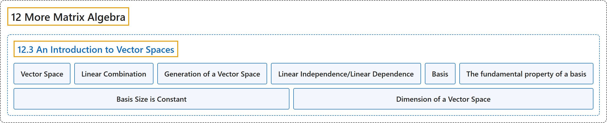

12.3 An Introduction to Vector Spaces
Classification

Glossary
| Term | Definition | 中文翻译 | Source |
|---|---|---|---|
| 12.3 An Introduction to Vector Spaces 向量空间介绍 |
(No definition) | （无定义） | Doerr & Levasseur, n.d., section 12.3 |
| Vector Space 向量空间 |
"Let \(V\) be any nonempty set of objects. Define on \(V\) an operation, called addition, for any two elements \(\vec{x}, \vec{y} \in V\text{,}\) and denote this operation by \(\vec{x}+ \vec{y}\text{.}\) Let scalar multiplication be defined for a real number \(a \in \mathbb{R}\) and any element \(\vec{x}\in V\) and denote this operation by \(a \vec{x}\text{.}\) The set \(V\) together with operations of addition and scalar multiplication is called a vector space over \(\mathbb{R}\) if the following hold for all \(\vec{x}, \vec{y}, \vec{z}\in V\), and \(a,b \in \mathbb{R}\text{:}\)" | 设 \(V\) 为任意非空对象集。在 \(V\) 上定义一种称为加法的运算，对任意两个元素 \(\vec{x}, \vec{y} \in V\)， 将该运算记作 \(\vec{x}+ \vec{y}\)。 对实数 \(a \in \mathbb{R}\) 与任意元素 \(\vec{x}\in V\) 定义数乘，记该运算为 \(a \vec{x}\)。 若对所有 \(\vec{x}, \vec{y}, \vec{z}\in V\) 与 \(a,b \in \mathbb{R}\)： 下列条件成立，则带有加法与数乘运算的集合 \(V\) 称为 \(\mathbb{R}\) 上的向量空间： | Doerr & Levasseur, n.d., Definition 12.3.1 |
| Linear Combination 线性组合 |
"A vector \(\pmb{ y}\) in vector space \(V\) (over \(\mathbb{R}\)) is a linear combination of the vectors \(\vec{x}_1\text{,}\) \(\vec{x}_2, \ldots\text{,}\) \(\vec{x}_n\) if there exist scalars \(a_1,a_2,\ldots,a_n\) in \(\mathbb{R}\) such that \(\vec{y} = a_1\vec{x}_1+ a_2\vec{x}_2+\ldots +a_n\vec{x}_n\)" | 若存在 \(\mathbb{R}\) 中的标量 \(a_1,a_2,\ldots,a_n\) 使得 \(\vec{y} = a_1\vec{x}_1+ a_2\vec{x}_2+\ldots +a_n\vec{x}_n\)，则向量空间 \(V\)（在 \(\mathbb{R}\) 上）中的向量 \(\pmb{ y}\) 是向量 \(\vec{x}_1\)， \(\vec{x}_2, \ldots\)， \(\vec{x}_n\) 的线性组合 | Doerr & Levasseur, n.d., Definition 12.3.6 |
| Generation of a Vector Space 向量空间的生成 |
"Let \(\left\{\vec{x}_1,\vec{x}_2, \ldots,\vec{x}_n\right\}\) be a set of vectors in a vector space \(V\) over \(\mathbb{R}\text{.}\) This set is said to generate, or span, \(V\) if, for any given vector \(\vec{y} \in V\text{,}\) we can always find scalars \(a_1\text{,}\) \(a_2, \ldots\text{,}\) \(a_n\) such that \(\vec{y} = a_1 \vec{x}_1+a_2 \vec{x}_2+\ldots +a_n \vec{x}_n\text{.}\) A set that generates a vector space is called a generating set." | 设 \(\left\{\vec{x}_1,\vec{x}_2, \ldots,\vec{x}_n\right\}\) 为 \(\mathbb{R}\)。 上向量空间 \(V\) 中的一组向量。若对任意给定向量 \(\vec{y} \in V\)， 总能找到标量 \(a_1\)， \(a_2, \ldots\)， \(a_n\) 使得 \(\vec{y} = a_1 \vec{x}_1+a_2 \vec{x}_2+\ldots +a_n \vec{x}_n\)。 则称该集合生成（或张成）\(V\)。生成向量空间的集合称为生成集。 | Doerr & Levasseur, n.d., Definition 12.3.9 |
| Linear Independence/Linear Dependence 线性无关／线性相关 |
"A set of vectors \(\left\{\vec{x}_1,\vec{x}_2, \ldots,\vec{x}_n\right\}\) from a real vector space \(V\) is linearly independent if the only solution to the equation \(a_1 \vec{x}_1+a_2 \vec{x}_2+\ldots +a_n \vec{x}_n= \vec{0}\) is \(a_1 = a_2 = \ldots = a_n = 0\text{.}\) Otherwise the set is called a linearly dependent set." | 若方程 \(a_1 \vec{x}_1+a_2 \vec{x}_2+\ldots +a_n \vec{x}_n= \vec{0}\) 的唯一解为 \(a_1 = a_2 = \ldots = a_n = 0\)。 则实向量空间 \(V\) 中的向量组 \(\left\{\vec{x}_1,\vec{x}_2, \ldots,\vec{x}_n\right\}\) 线性无关。否则称该向量组为线性相关组。 | Doerr & Levasseur, n.d., Definition 12.3.13 |
| Basis 基 |
"A set of vectors \(B=\left\{\vec{x}_1,\vec{x}_2, \ldots,\vec{x}_n\right\}\) is a basis for a vector space \(V\) if:" | 向量组 \(B=\left\{\vec{x}_1,\vec{x}_2, \ldots,\vec{x}_n\right\}\) 是向量空间 \(V\) 的基，若： | Doerr & Levasseur, n.d., Definition 12.3.14 |
| The fundamental property of a basis 基的基本性质 |
"If \(\left\{\vec{x}_1,\vec{x}_2, \ldots ,\vec{x}_n\right\}\) is a basis for a vector space V over \(\mathbb{R}\), then any vector \(y \in V\) can be uniquely expressed as a linear combination of the \(\vec{x}_i\textrm{'s}\)." | 若 \(\left\{\vec{x}_1,\vec{x}_2, \ldots ,\vec{x}_n\right\}\) 是 \(\mathbb{R}\) 上向量空间 V 的一组基，则任一向量 \(y \in V\) 都可以唯一地表示为 \(\vec{x}_i\textrm{'s}\) 的线性组合。 | Doerr & Levasseur, n.d., Theorem 12.3.15 |
| Basis Size is Constant 基的大小不变 |
"If \(V\) is a vector space with a basis containing \(n\) elements, then all bases of \(V\) contain \(n\) elements." | 若 \(V\) 是一个向量空间，且有一组含 \(n\) 个元素的基，则 \(V\) 的所有基都含 \(n\) 个元素。 | Doerr & Levasseur, n.d., Theorem 12.3.17 |
| Dimension of a Vector Space 向量空间的维数 |
"Let \(V\) be a vector space over \(\mathbb{R}\) with basis \(\left\{\vec{x}_1,\vec{x}_2, \ldots,\vec{x}_n\right\}\text{.}\) Then the dimension of \(V\) is \(n\text{.}\) We use the notation \(\dim V = n\) to indicate that \(V\) is \(n\)-dimensional." | 设 \(V\) 为 \(\mathbb{R}\) 上的向量空间，其基为 \(\left\{\vec{x}_1,\vec{x}_2, \ldots,\vec{x}_n\right\}\)。 则 \(V\) 的维数为 \(n\)。 我们用记号 \(\dim V = n\) 表示 \(V\) 是 \(n\) 维的。 | Doerr & Levasseur, n.d., Definition 12.3.18 |
References
Doerr, A., & Levasseur, K. (n.d.). Applied discrete structures. Retrieved October 28, 2026, from https://discretemath.org/ads/index-ads.html